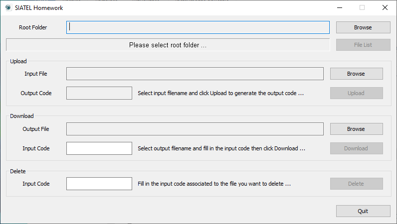

Problem: Create a file server with optimal access to files, with the restriction that each folder can store N files maxim.
Solution: B-tree implementation
A B-tree is a method of placing and locating files (called records or keys) in a database. (The meaning of the letter B has not been explicitly defined.) The B-tree algorithm minimizes the number of times a medium must be accessed to locate a desired record, thereby speeding up the process.
B-trees are preferred when decision points, called nodes, are on hard disk rather than in random-access memory (RAM). It takes thousands of times longer to access a data element from hard disk as compared with accessing it from RAM, because a disk drive has mechanical parts, which read and write data far more slowly than purely electronic media. B-trees save time by using nodes with many branches (called children), compared with binary trees, in which each node has only two children. When there are many children per node, a record can be found by passing through fewer nodes than if there are two children per node. A simplified example of this principle is shown below.
In a tree, records are stored in locations called leaves. This name derives from the fact that records always exist at end points; there is nothing beyond them. The maximum number of children per node is the order of the tree. The number of required disk accesses is the depth. The image at the left shows a binary tree for locating a particular record in a set of eight leaves. The image at the right shows a B-tree of order three for locating a particular record in a set of eight leaves (the ninth leaf is unoccupied, and is called a null). The binary tree at the left has a depth of four; the B-tree at the right has a depth of three. Clearly, the B-tree allows a desired record to be located faster, assuming all other system parameters are identical. The tradeoff is that the decision process at each node is more complicated in a B-tree as compared with a binary tree. A sophisticated program is required to execute the operations in a B-tree. But this program is stored in RAM, so it runs fast.
In a practical B-tree, there can be thousands, millions, or billions of records. Not all leaves necessarily contain a record, but at least half of them do. The difference in depth between binary-tree and B-tree schemes is greater in a practical database than in the example illustrated here, because real-world B-trees are of higher order (32, 64, 128, or more). Depending on the number of records in the database, the depth of a B-tree can and often does change. Adding a large enough number of records will increase the depth; deleting a large enough number of records will decrease the depth. This ensures that the B-tree functions optimally for the number of records it contains.
The algorithms for the search, create, and insert operations are shown below. Note that these algorithms are single pass; in other words, they do not traverse back up the tree. Since B-trees strive to minimize disk accesses and the nodes are usually stored on disk, this single-pass approach will reduce the number of node visits and thus the number of disk accesses. Simpler double-pass approaches that move back up the tree to fix violations are possible.
Since all nodes are assumed to be stored in secondary storage (disk) rather than primary storage (memory), all references to a given node will be preceeded by a read operation denoted by Disk-Read. Similarly, once a node is modified and it is no longer needed, it must be written out to secondary storage with a write operation denoted by Disk-Write. The algorithms below assume that all nodes referenced in parameters have already had a corresponding Disk-Read operation. New nodes are created and assigned storage with the Allocate-Node call. The implementation details of the Disk-Read, Disk-Write, and Allocate-Node functions are operating system and implementation dependent.
i <- 1 while i <= n[x] and k > keyi[x] do i <- i + 1 if i <= n[x] and k = keyi[x] then return (x, i) if leaf[x] then return NIL else Disk-Read(ci[x]) return B-Tree-Search(ci[x], k)
The search operation on a B-tree is analogous to a search on a binary tree. Instead of choosing between a left and a right child as in a binary tree, a B-tree search must make an n-way choice. The correct child is chosen by performing a linear search of the values in the node. After finding the value greater than or equal to the desired value, the child pointer to the immediate left of that value is followed. If all values are less than the desired value, the rightmost child pointer is followed. Of course, the search can be terminated as soon as the desired node is found. Since the running time of the search operation depends upon the height of the tree, B-Tree-Search is O(logt n).
x <- Allocate-Node() leaf[x] <- TRUE n[x] <- 0 Disk-Write(x) root[T] <- x
The B-Tree-Create operation creates an empty B-tree by allocating a new root node that has no keys and is a leaf node. Only the root node is permitted to have these properties; all other nodes must meet the criteria outlined previously. The B-Tree-Create operation runs in time O(1).
z <- Allocate-Node() leaf[z] <- leaf[y] n[z] <- t - 1 for j <- 1 to t - 1 do keyj[z] <- keyj+t[y] if not leaf[y] then for j <- 1 to t do cj[z] <- cj+t[y] n[y] <- t - 1 for j <- n[x] + 1 downto i + 1 do cj+1[x] <- cj[x] ci+1 <- z for j <- n[x] downto i do keyj+1[x] <- keyj[x] keyi[x] <- keyt[y] n[x] <- n[x] + 1 Disk-Write(y) Disk-Write(z) Disk-Write(x)
If a node becomes "too full," it is necessary to perform a split operation. The split operation moves the median key of node x into its parent y where x is the ith child of y. A new node, z, is allocated, and all keys in x right of the median key are moved to z. The keys left of the median key remain in the original node x. The new node, z, becomes the child immediately to the right of the median key that was moved to the parent y, and the original node, x, becomes the child immediately to the left of the median key that was moved into the parent y.
The split operation transforms a full node with 2t - 1 keys into two nodes with t - 1 keys each. Note that one key is moved into the parent node. The B-Tree-Split-Child algorithm will run in time O(t) where t is constant.
r <- root[T] if n[r] = 2t - 1 then s <- Allocate-Node() root[T] <- s leaf[s] <- FALSE n[s] <- 0 c1 <- r B-Tree-Split-Child(s, 1, r) B-Tree-Insert-Nonfull(s, k) else B-Tree-Insert-Nonfull(r, k)
i <- n[x] if leaf[x] then while i >= 1 and k < keyi[x] do keyi+1[x] <- keyi[x] i <- i - 1 keyi+1[x] <- k n[x] <- n[x] + 1 Disk-Write(x) else while i >= and k < keyi[x] do i <- i - 1 i <- i + 1 Disk-Read(ci[x]) if n[ci[x]] = 2t - 1 then B-Tree-Split-Child(x, i, ci[x]) if k > keyi[x] then i <- i + 1 B-Tree-Insert-Nonfull(ci[x], k)
To perform an insertion on a B-tree, the appropriate node for the key must be located using an algorithm similar to B-Tree-Search. Next, the key must be inserted into the node. If the node is not full prior to the insertion, no special action is required; however, if the node is full, the node must be split to make room for the new key. Since splitting the node results in moving one key to the parent node, the parent node must not be full or another split operation is required. This process may repeat all the way up to the root and may require splitting the root node. This approach requires two passes. The first pass locates the node where the key should be inserted; the second pass performs any required splits on the ancestor nodes.
Since each access to a node may correspond to a costly disk access, it is desirable to avoid the second pass by ensuring that the parent node is never full. To accomplish this, the presented algorithm splits any full nodes encountered while descending the tree. Although this approach may result in unnecessary split operations, it guarantees that the parent never needs to be split and eliminates the need for a second pass up the tree. Since a split runs in linear time, it has little effect on the O(t logt n) running time of B-Tree-Insert.
Splitting the root node is handled as a special case since a new root must be created to contain the median key of the old root. Observe that a B-tree will grow from the top.
Deletion of a key from a B-tree is possible; however, special care must be taken to ensure that the properties of a B-tree are maintained. Several cases must be considered. If the deletion reduces the number of keys in a node below the minimum degree of the tree, this violation must be corrected by combining several nodes and possibly reducing the height of the tree. If the key has children, the children must be rearranged. For a detailed discussion of deleting from a B-tree, refer to Section 19.3, pages 395-397, of Cormen, Leiserson, and Rivest or to another reference listed below.
The main implementation is in the SiatelHomeworkExt.h and SiatelHomeworkExt.cpp files and is split into three classes:
CNetworkBase - the base class: it encodes a key as a code (EncodeNetworkID) and decodes it back (DecodeNetworkID), validates a code (IsValidCode), picks a random key (GetNextID), builds the path of a file (GetFilePath) and creates its folders (CreateNetworkPath);CNetworkHash - keeps the index of the stored files in hashmaps; the application uses this class, because USE_HASH_METHOD is TRUE;CNetworkTree - a B-tree node, with B-Tree-Create (CreateTree) and B-Tree-Search (SearchNode). The insert, update, import and export operations are not implemented yet, so the application does not use it to index the files.Each upload gets a random key that is not used yet. The code that the user receives is this key written in base 36 (the digits 0-9 and the letters A-Z) and padded with zeros to four characters (MAX_CODE_LENGTH); for example, the key 65535 is the code 1EKF.
The folder of a file does not depend on its code, but on its slot: the number of files that are already stored when the file is uploaded. The slot is written in base N, where N is BALANCED_TREE_ORDER (it is 4 in the current code, while the comment from the source says it should be 1000). The last digit gives the name of the file and each of the other digits gives the name of a folder; they are encoded like a code, with four characters, and the file name has the .dat extension (FormatFolder and FormatFilename). For N = 4, the first slots are stored as follows:
slot 0: 0000.dat slot 1: 0001.dat slot 2: 0002.dat slot 3: 0003.dat slot 4: 0001\0000.dat slot 5: 0001\0001.dat slot 8: 0002\0000.dat slot 15: 0003\0003.dat slot 16: 0001\0000\0000.dat slot 20: 0001\0001\0000.dat slot 64: 0001\0000\0000\0000.dat
In this way, no folder stores more than N files and no folder has more than N subfolders. When a file is deleted, the file from the last slot is moved into the freed slot, so the slots remain contiguous; the code of the moved file does not change. The code and the path are built as follows:
CString CNetworkBase::EncodeNetworkID(int nKey)
{
CString strKey;
// Extract the least-significant digit before entering the loop.
int nModulo = nKey % intNetworkDigitLength;
nKey /= intNetworkDigitLength;
// Build the encoded string from least- to most-significant digit.
while (nKey != 0)
{
strKey.Insert(0, strNetworkDigitString.GetAt(nModulo)); // Prepend current digit.
nModulo = nKey % intNetworkDigitLength;
nKey /= intNetworkDigitLength;
}
strKey.Insert(0, strNetworkDigitString.GetAt(nModulo)); // Prepend the final digit.
// Left-pad with '0' characters to reach the required fixed code length.
while (strKey.GetLength() < MAX_CODE_LENGTH)
strKey.Insert(0, _T('0'));
return strKey;
}
CString CNetworkBase::GetFilePath(int nKey, CStringArray& arrFilePath)
{
bool bFirstTime = true;
CString strFilePath;
arrFilePath.RemoveAll(); // Clear any previous path components.
// Decompose key into folder hierarchy using BALANCED_TREE_ORDER as the radix.
int folder_no = nKey % BALANCED_TREE_ORDER; // Least-significant folder index.
int file_name = nKey - folder_no; // Remaining key after removing leaf index.
while (file_name != 0)
{
if (bFirstTime)
{
// First iteration: the leaf is the filename, not a folder.
strFilePath = FormatFilename(folder_no);
bFirstTime = false;
}
else
{
// Subsequent iterations: prepend each intermediate folder to the path.
CString strFolder = FormatFolder(folder_no);
arrFilePath.InsertAt(0, strFolder); // Track folder for directory creation.
strFolder += _T("\\");
strFilePath.Insert(0, strFolder); // Prepend folder to the path string.
}
// Move up one level in the hierarchy.
nKey /= BALANCED_TREE_ORDER;
folder_no = nKey % BALANCED_TREE_ORDER;
file_name = nKey - folder_no;
}
// Handle the root (most-significant) component of the path.
if (bFirstTime)
{
// Key fit entirely in one level — just a filename, no subdirectories.
strFilePath = FormatFilename(folder_no);
}
else
{
// Prepend the top-level folder to complete the path.
CString strFolder = FormatFolder(folder_no);
arrFilePath.InsertAt(0, strFolder);
strFolder += _T("\\");
strFilePath.Insert(0, strFolder);
}
return strFilePath;
}
bool CNetworkBase::CreateNetworkPath(CString strRootFolder, CStringArray& strSubFolders)
{
CString strNetworkPath = strRootFolder;
// Verify the root folder is accessible before descending into subfolders.
if (!SetCurrentDirectory(strNetworkPath))
return false;
// Walk each subfolder level, creating directories that do not yet exist.
const int nLength = (int)strSubFolders.GetCount();
for (int nIndex = 0; nIndex < nLength; nIndex++)
{
strNetworkPath.AppendFormat(_T("\\%s"), static_cast<LPCWSTR>(strSubFolders.GetAt(nIndex)));
if (!SetCurrentDirectory(strNetworkPath)) // Directory does not exist yet.
{
if (!CreateDirectory(strNetworkPath, nullptr)) // Attempt to create it.
return false; // Creation failed; abort.
}
}
return true;
}
The index of the stored files is kept by the CNetworkHash class, using hashmaps. For every key it holds the slot of the file (named nLevel in the code) and its relative path. The class has the following methods:
void RemoveAll() - removes all items from databasebool ImportData() - loads database from a text configuration filebool ExportData() - saves database to a text configuration fileint GenerateID() - generates a new key for insertionbool SearchItem(int nKey, int& nLevel, CString& strFilePath) - allows searching for a file into database, based on given keybool UpdateItem(int nKey, int nLevel, CString strFilePath) - allows updating a file into database, based on given keybool InsertItem(int nKey, int nLevel, CString strFilePath) - allows inserting a file into database, based on given keybool DeleteItem(int nKey) - allows deleting a file from database, based on given keyThe index is saved in the filelist.txt file, in the root folder: ImportData reads it when the root folder is selected and ExportData writes it when the application is closed. Each line holds the key, the slot and the relative path of a file, separated by spaces; for example, the line 65535 4 0001\0000.dat says that the file with the code 1EKF is in the slot 4, at the path 0001\0000.dat. The implementation is as follows:
CNetworkHash::CNetworkHash()
{
// Pre-size both hash tables to match the maximum expected number of entries.
m_mapFileCode.InitHashTable(MAX_RANDOM_DATA);
m_mapFilePath.InitHashTable(MAX_RANDOM_DATA);
}
CNetworkHash::~CNetworkHash()
{
}
void CNetworkHash::RemoveAll()
{
m_listKey.RemoveAll();
m_mapFileCode.RemoveAll();
m_mapFilePath.RemoveAll();
}
bool CNetworkHash::ImportData()
{
int nLevel = 0, nFileCode = 0;
CString strFileLine, strFilePath;
const UINT nTextFileFlags = CFile::modeRead | CFile::typeText;
try {
CStdioFile pTextFile(GetFileList(), nTextFileFlags);
while (pTextFile.ReadString(strFileLine))
{
int nFirstNoLength = strFileLine.Find(_T(' '), 0);
int nSecondNoLength = strFileLine.Find(_T(' '), nFirstNoLength + 1);
ASSERT((nFirstNoLength >= 0) && (nSecondNoLength >= 0));
nFileCode = _tstoi(strFileLine.Mid(0, nFirstNoLength));
nLevel = _tstoi(strFileLine.Mid(nFirstNoLength + 1, nSecondNoLength));
strFilePath = strFileLine.Mid(nSecondNoLength + 1);
VERIFY(InsertItem(nFileCode, nLevel, strFilePath));
TRACE(_T("Importing data %d %d %s ...\n"), nFileCode, nLevel, static_cast<LPCWSTR>(strFilePath));
}
pTextFile.Close();
}
catch (CFileException* pFileException) {
TCHAR lpszFileException[0x1000];
VERIFY(pFileException->GetErrorMessage(lpszFileException, 0x1000));
TRACE(_T("%s\n"), lpszFileException);
pFileException->Delete();
return false;
}
return true;
}
bool CNetworkHash::ExportData()
{
int nLevel = 0;
CString strFileLine, strFilePath;
const UINT nTextFileFlags = CFile::modeCreate | CFile::modeWrite | CFile::typeText;
try {
CStdioFile pTextFile(GetFileList(), nTextFileFlags);
const int nLength = GetSize();
for (int nIndex = 0; nIndex < nLength; nIndex++)
{
int nFileCode = GetKey(nIndex);
VERIFY(SearchItem(nFileCode, nLevel, strFilePath));
strFileLine.Format(_T("%d %d %s\n"), nFileCode, nLevel, static_cast<LPCWSTR>(strFilePath));
pTextFile.WriteString(strFileLine);
TRACE(_T("Exporting data %d %d %s ...\n"), nFileCode, nLevel, static_cast<LPCWSTR>(strFilePath));
}
pTextFile.Close();
}
catch (CFileException* pFileException) {
TCHAR lpszFileException[0x1000];
VERIFY(pFileException->GetErrorMessage(lpszFileException, 0x1000));
TRACE(_T("%s\n"), lpszFileException);
pFileException->Delete();
return false;
}
return true;
}
int CNetworkHash::GenerateID()
{
int nLevel = 0;
CString strFilePath;
int nKey = GetNextID(); // Pick an initial random candidate.
// Keep generating until we find a key not already in the hash table.
while (SearchItem(nKey, nLevel, strFilePath))
nKey = GetNextID();
return nKey;
}
bool CNetworkHash::SearchItem(int nKey, int& nLevel, CString& strFilePath)
{
// Look up the level and file path independently; both must be present for a valid entry.
bool bFileCode = m_mapFileCode.Lookup(nKey, nLevel);
bool bFilePath = m_mapFilePath.Lookup(nKey, strFilePath);
return (bFileCode && bFilePath); // Only succeed if both maps contain the key.
}
bool CNetworkHash::UpdateItem(int nKey, int nLevel, CString strFilePath)
{
// Overwrite existing values in both maps (SetAt inserts or replaces).
m_mapFileCode.SetAt(nKey, nLevel);
m_mapFilePath.SetAt(nKey, strFilePath);
return true;
}
bool CNetworkHash::InsertItem(int nKey, int nLevel, CString strFilePath)
{
m_listKey.Add(nKey); // Record the key in the ordered list for iteration.
m_mapFileCode.SetAt(nKey, nLevel); // Store the associated level.
m_mapFilePath.SetAt(nKey, strFilePath); // Store the associated file path.
return true;
}
bool CNetworkHash::DeleteItem(int nKey)
{
int nOldLevel = 0, nNewLevel = 0;
CString strOldFilePath, strNewFilePath;
const int nLength = GetSize();
if (nLength > 0)
{
if (SearchItem(nKey, nNewLevel, strNewFilePath))
{
// Remove the key from the ordered list so iteration stays consistent.
for (int nIndex = 0; nIndex < nLength; nIndex++)
{
if (nKey == m_listKey.GetAt(nIndex))
{
m_listKey.RemoveAt(nIndex);
break; // Key found and removed; no need to continue.
}
}
// Find the item whose level equals the new size (i.e., the last slot),
// and move its physical file into the slot freed by the deleted entry.
for (int nIndex = 0; nIndex < GetSize(); nIndex++)
{
const int nCurrentKey = m_listKey.GetAt(nIndex);
if (SearchItem(nCurrentKey, nOldLevel, strOldFilePath))
{
if (nOldLevel == GetSize()) // This item occupies the last slot.
{
CString strFileName = strNewFilePath;
// strNewFilePath = path that was freed by the deleted item.
// strOldFilePath = current physical location of the item being moved.
strOldFilePath.Insert(0, GetRootFolder()); // Build absolute source path.
strFileName.Insert(0, GetRootFolder()); // Build absolute destination path.
if (!MoveFile(strOldFilePath, strFileName)) // Relocate the file on disk.
{
const DWORD dwLastError = GetLastError();
CString strError = FormatLastError(dwLastError);
AfxMessageBox(strError, MB_OK | MB_ICONSTOP);
}
else
{
// Update the hash table to reflect the item's new location.
VERIFY(UpdateItem(nCurrentKey, nNewLevel, strNewFilePath));
}
break; // Only one item needs to be relocated.
}
}
}
}
}
// Remove the deleted key from both hash maps.
bool bFileCode = m_mapFileCode.RemoveKey(nKey);
bool bFilePath = m_mapFilePath.RemoveKey(nKey);
return (bFileCode && bFilePath); // Both removals must succeed for a clean delete.
}
Given the above code, the upload, download and delete operations are implemented as follows (the USE B-TREE branches are empty, because CNetworkTree is not finished yet):
void CSiatelHomeworkDlg::OnBnClickedUpload()
{
BOOL bCancelOperation = FALSE; // flag that can be set to TRUE to abort CopyFileEx mid-transfer
CString strMessage, strFilename;
CStringArray arrNetworkPath; // receives the individual folder components of the storage path
m_ctrlFolder.GetWindowText(m_strRootFolder); // read the current root folder from the UI
if (m_strRootFolder.IsEmpty())
{
MessageBox(EMPTY_ROOT_FOLDER, _T("Error"), MB_OK); // cannot proceed without a root folder
}
else
{
if (USE_HASH_METHOD)
{
ASSERT(m_hashNetwork != nullptr);
int nFileCode = m_hashNetwork->GenerateID(); // generate a unique integer ID for this file
int nPathCode = m_hashNetwork->GetSize(); // current item count doubles as the path index
CString strFileCode = m_hashNetwork->EncodeNetworkID(nFileCode); // encode the ID as a human-readable network code
CString strFilePath = m_hashNetwork->GetFilePath(nPathCode, arrNetworkPath); // resolve the relative storage path
VERIFY(m_hashNetwork->CreateNetworkPath(m_strRootFolder, arrNetworkPath)); // create any missing subdirectories
strFilename.Format(_T("%s%s"), static_cast<LPCWSTR>(m_strRootFolder), static_cast<LPCWSTR>(strFilePath)); // absolute destination path
m_ctrlProgress.SetRange32(0, PROGRESS_RANGE); // configure the progress bar range
m_ctrlProgress.SetPos(0); // reset the indicator to the start
m_ctrlProgress.ShowWindow(SW_SHOW); // make the progress bar visible
if (!CopyFileEx(m_strInputFile, strFilename, m_funcProgress, &m_ctrlProgress, &bCancelOperation, 0 ))
{
// copy failed: hide the progress bar and display the Win32 error description
m_ctrlProgress.ShowWindow(SW_HIDE);
const DWORD dwLastError = GetLastError();
m_ctrlMessage.SetWindowText(m_hashNetwork->FormatLastError(dwLastError));
}
else
{
VERIFY(m_hashNetwork->InsertItem(nFileCode, nPathCode, strFilePath)); // register the new file in the hash index
strMessage.Format(_T("Done writing file %s [%s] ..."), static_cast<LPCWSTR>(strFilename), static_cast<LPCWSTR>(strFileCode));
m_ctrlMessage.SetWindowText(strMessage); // show the success message with the destination path
m_ctrlOutputCode.SetWindowText(strFileCode); // display the generated network code for the user to note
m_ctrlProgress.SetPos(PROGRESS_RANGE-1); // advance bar to near-complete
m_ctrlProgress.UpdateWindow(); // force an immediate repaint
Sleep(SLEEP_INTERVAL); // brief pause so the user can see the completed bar
m_ctrlProgress.ShowWindow(SW_HIDE); // hide the progress bar
}
}
else // USE B-TREE
{
}
}
}
void CSiatelHomeworkDlg::OnBnClickedDownload()
{
int nLevel = 0; // receives the tree depth from SearchItem (required by the API, not used here)
BOOL bCancelOperation = FALSE; // flag that can be set to TRUE to abort CopyFileEx mid-transfer
CString strMessage, strFilename;
CStringArray arrNetworkPath;
m_ctrlFolder.GetWindowText(m_strRootFolder); // read the current root folder from the UI
if (m_strRootFolder.IsEmpty())
{
MessageBox(EMPTY_ROOT_FOLDER, _T("Error"), MB_OK); // cannot proceed without a root folder
}
else
{
if (USE_HASH_METHOD)
{
ASSERT(m_hashNetwork != nullptr);
if (!m_hashNetwork->IsValidCode(m_strInputCode)) // reject codes containing illegal characters
{
m_ctrlMessage.SetWindowText(INVALID_CHARS);
}
else
{
CString strFilePath; // relative path to file
int nFileCode = m_hashNetwork->DecodeNetworkID(m_strInputCode); // convert the alphanumeric code back to an integer key
if (!m_hashNetwork->SearchItem(nFileCode, nLevel, strFilePath)) // look up the file's relative path in the index
{
m_ctrlMessage.SetWindowText(FILE_DOES_NOT_EXISTS); // code not found in the index
}
else
{
strFilename.Format(_T("%s%s"), static_cast<LPCWSTR>(m_strRootFolder), static_cast<LPCWSTR>(strFilePath)); // build the absolute source path
m_ctrlProgress.SetRange32(0, PROGRESS_RANGE); // configure the progress bar range
m_ctrlProgress.SetPos(0); // reset the indicator to the start
m_ctrlProgress.ShowWindow(SW_SHOW); // make the progress bar visible
if (!CopyFileEx(strFilename, m_strOutputFile, m_funcProgress, &m_ctrlProgress, &bCancelOperation, 0 ))
{
// copy failed: hide the bar, then diagnose whether the file is missing or another OS error occurred
m_ctrlProgress.ShowWindow(SW_HIDE);
const DWORD dwLastError = GetLastError();
if (!m_hashNetwork->FileExists(strFilename))
m_ctrlMessage.SetWindowText(FILE_DOES_NOT_EXISTS); // file in index but not on disk
else
m_ctrlMessage.SetWindowText(m_hashNetwork->FormatLastError(dwLastError)); // other Win32 error
}
else
{
strMessage.Format(_T("Done reading file %s [%s] ..."), static_cast<LPCWSTR>(strFilename), static_cast<LPCWSTR>(m_strInputCode));
m_ctrlMessage.SetWindowText(strMessage); // show success message with source path and code
m_ctrlProgress.SetPos(PROGRESS_RANGE-1); // advance bar to near-complete
m_ctrlProgress.UpdateWindow(); // force an immediate repaint
Sleep(SLEEP_INTERVAL); // brief pause so the user can see the completed bar
m_ctrlProgress.ShowWindow(SW_HIDE); // hide the progress bar
}
}
}
}
else // USE B-TREE
{
}
}
}
void CSiatelHomeworkDlg::OnBnClickedDelete()
{
int nLevel = 0; // receives the tree depth from SearchItem (required by the API, not used here)
CString strMessage, strFilename;
CStringArray arrNetworkPath;
m_ctrlFolder.GetWindowText(m_strRootFolder); // read the current root folder from the UI
if (m_strRootFolder.IsEmpty())
{
MessageBox(EMPTY_ROOT_FOLDER, _T("Error"), MB_OK); // cannot proceed without a root folder
}
else
{
if (USE_HASH_METHOD)
{
ASSERT(m_hashNetwork != nullptr);
if (!m_hashNetwork->IsValidCode(m_strDeleteCode)) // reject codes containing illegal characters
{
m_ctrlMessage.SetWindowText(INVALID_CHARS);
}
else
{
CString strFilePath; // relative path resolved from the index
int nFileCode = m_hashNetwork->DecodeNetworkID(m_strDeleteCode); // convert the alphanumeric code back to an integer key
if (!m_hashNetwork->SearchItem(nFileCode, nLevel, strFilePath)) // look up the file in the index
{
m_ctrlMessage.SetWindowText(FILE_DOES_NOT_EXISTS); // code not found in the index
}
else
{
strFilename.Format(_T("%s%s"), static_cast<LPCWSTR>(m_strRootFolder), static_cast<LPCWSTR>(strFilePath)); // build the absolute path
if (!m_hashNetwork->FileExists(strFilename)) // confirm the file is actually present on disk
{
m_ctrlMessage.SetWindowText(FILE_DOES_NOT_EXISTS); // index entry exists but the file is missing
}
else
{
if (!DeleteFile(strFilename)) // attempt the Win32 file deletion
{
// deletion failed (e.g. file locked); report the OS error
const DWORD dwLastError = GetLastError();
m_ctrlMessage.SetWindowText(m_hashNetwork->FormatLastError(dwLastError));
}
else
{
VERIFY(m_hashNetwork->DeleteItem(nFileCode)); // remove the entry from the hash index
strMessage.Format(_T("File %s [%s] has been deleted ..."), static_cast<LPCWSTR>(strFilename), static_cast<LPCWSTR>(m_strDeleteCode));
m_ctrlMessage.SetWindowText(strMessage); // confirm the deletion to the user
}
}
}
}
}
else // USE B-TREE
{
}
}
}
The UnitTests project is part of the solution and uses the Microsoft Native Unit Test Framework. The application is an executable, so the test DLL compiles SiatelHomeworkExt.cpp, VersionInfo.cpp and stdafx.cpp itself. There is one test file for each class under test, plus one for the workflows of the main dialog:
EncodeNetworkID, DecodeNetworkID, IsValidCode), GetNextID, the path of a slot (GetFilePath) and CreateNetworkPath;InsertItem, SearchItem, UpdateItem, DeleteItem (including the move of the last file into the freed slot), GenerateID and the import and export of filelist.txt;CNetworkTree: CreateTree, SearchNode, DeleteTree and GenerateID;CVersionInfo, which reads the version resource that the About dialog displays;Tests are named after the function, the situation and the expected result. For example, the slot 27 is 123 in base 4, so its file is stored in the folder 0001, in the subfolder 0002, with the name 0003:
TEST_METHOD(GetFilePath_KeyWithNestedFolders_ListsFoldersFromTheTopDown)
{
CNetworkBase network;
CStringArray arrFolders;
// 27 is 123 in base 4: folder 0001, folder 0002, file 0003.
const CString strPath = network.GetFilePath(27, arrFolders);
Assert::AreEqual(CString(_T("0001\\0002\\0003.dat")), strPath);
Assert::AreEqual(2, static_cast<int>(arrFolders.GetCount()));
Assert::AreEqual(CString(_T("0001")), arrFolders.GetAt(0));
Assert::AreEqual(CString(_T("0002")), arrFolders.GetAt(1));
}
The main dialog cannot be created in a test, so the workflow tests use a helper class, CNetworkSession, which makes the calls that the Browse, Upload, Download and Delete handlers make, in the same order, on real folders that are created under %TEMP% and removed when the test ends. Its VerifyAll method checks that the index, the disk and a record of what was uploaded agree: every key is listed once, the slots are a permutation of 0..size-1, every file is where GetFilePath says and holds its own content, no other data file exists, and every file can be downloaded. For example, when the first of three files is deleted, the last one must take its slot (ExpectLevel checks the slot of a code and the path that belongs to it):
TEST_METHOD(Delete_FirstOfThree_MovesTheLastFileIntoItsSlot)
{
CNetworkSession session;
const CString strFirst = session.StoreText("first");
const CString strSecond = session.StoreText("second");
const CString strThird = session.StoreText("third");
session.RemoveFile(strFirst);
ExpectLevel(session, strThird, 0);
ExpectLevel(session, strSecond, 1);
Assert::AreEqual(std::string("third"), TestHelpers::ReadFile(session.GetRootFolder() + _T("0000.dat")));
Assert::IsFalse(TestHelpers::PathExists(session.GetRootFolder() + _T("0002.dat")));
session.VerifyAll();
}
A message box or a failed assertion that nobody answers would block an unattended run forever, so the tests guard against both. CMessageBoxMonitor closes every message box that the code under test shows (CNetworkHash::DeleteItem shows one when it cannot move a file), records its caption and text, and fails the running test, unless the test expects the message box, reads the record and then calls CMessageBoxMonitor::Clear(). In Debug builds, CAssertionMonitor does the same for a failed MFC or ATL assertion. A test class turns the guards on with the GUARD_AGAINST_UNEXPECTED_POPUPS() macro, which sets them up before every test and checks them after it. The guards have tests of their own; those of CAssertionMonitor exist only in Debug builds, so a Release run lists fewer tests.
The expected paths in the tests are written for BALANCED_TREE_ORDER = 4, so they must be updated when the value is raised to 1000; a static_assert in CNetworkTreeTests.cpp stops the build of the tests as a reminder. The dialogs and the CHLinkCtrl control are not covered.
In Visual Studio, open Test Explorer and click Run All Tests. From a Developer Command Prompt for VS, build and run the tests as follows. For another configuration, change the Configuration and Platform values and the path of the DLL; the 32-bit tests run with /Platform:x86.
msbuild UnitTests\UnitTests.vcxproj /p:Configuration=Debug /p:Platform=x64 vstest.console.exe UnitTests\x64\Debug\UnitTests.dll /Platform:x64
The work below is still open. It follows from the unfinished parts of the code, and no release dates are set.
CNetworkTree can only create a tree and search it: ImportData and ExportData are empty placeholders, no operation deletes a single key, and InsertNode, UpdateNode and InsertEmpty exist only in a comment in SiatelHomeworkExt.h ("methods for future use"). Once the missing operations are written, the empty USE B-TREE branches (upload, download, delete and file list) can be filled in and USE_HASH_METHOD can be set to FALSE.BALANCED_TREE_ORDER from 4 to 1000, as the comment in SiatelHomeworkExt.h asks. The path of a file depends on this value, so stores created with the old one would have to be migrated; otherwise a new upload could end up on the path of an older file.GetNextID relies on rand(), which returns 15-bit values, so only 32,768 different keys can ever be drawn, although the hash tables are sized for MAX_RANDOM_DATA (65,537) entries. GenerateID keeps drawing until it finds a free key, so it would never return once all of them are used. A wider random source and a "store is full" message would fix both.DeleteItem cannot move the last file into the freed slot, it shows the system error but still removes the entry, so the index and the slots no longer match, and an entry whose file is missing on disk cannot be deleted from the dialog. In Debug builds, ImportData fails an ASSERT on a line that is not made of a key, a slot and a path.CNetworkBase, CNetworkHash, CNetworkTree and CVersionInfo. The dialogs and the CHLinkCtrl control are not covered yet, and the B-tree operations that are still to be written will need tests of their own. The tests assume BALANCED_TREE_ORDER is 4, so their expected paths must be updated when it is raised to 1000; a static_assert in CNetworkTreeTests.cpp fails the build of the tests as a reminder.nLevel means. In CNetworkHash it is the slot of a file, not a depth in a tree, but the names and some comments still say "level" and "tree depth". Renaming it (for example to nSlot) and fixing the comments would match what the code does.